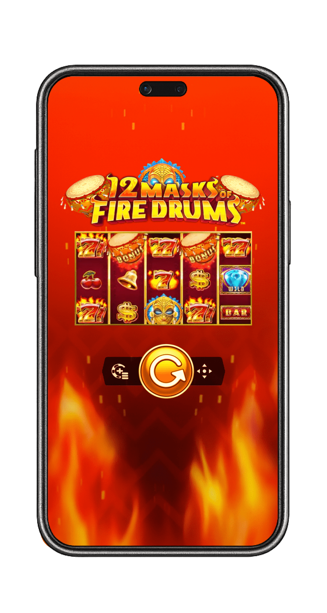
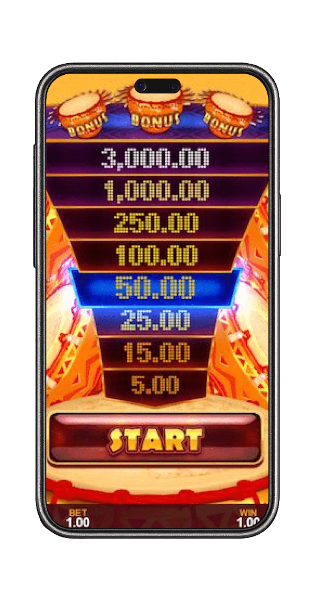
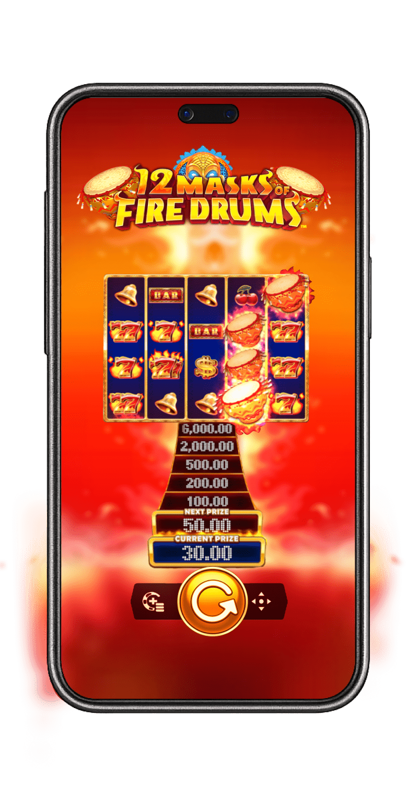
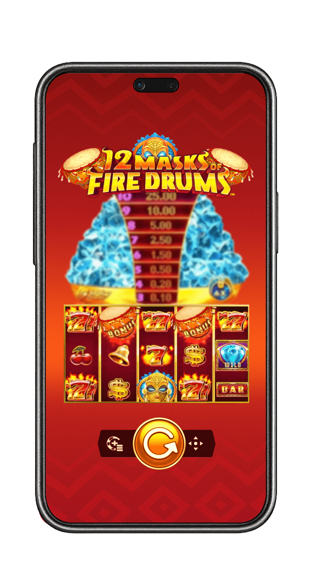

The first step on your fiery adventure is choosing the right place to play. A top-tier online casino does more than just host the game; it creates a secure, rewarding, and seamless environment for your entire gaming session. After extensive research, we have identified the premier online casinos that not only feature the 12 Masks of Fire Drums slots but also offer exceptional service, generous bonuses, and a commitment to player satisfaction. These platforms are where the beat of the drums sounds the sweetest.
12 Masks of Fire Drums Slots: Guide to Epic Wins!
Are you ready to feel the rhythmic beat of the tribal drums and chase a torrent of fiery rewards? Prepare yourself for an unforgettable journey into the heart of a blazing jungle with the 12 Masks of Fire Drums online slot. This spectacular game, a brilliant creation from the minds at Gameburger Studios, exclusively for Games Global, has set the online gaming world ablaze. It masterfully combines a vibrant, high-energy theme with the proven and beloved Epic Strike™ scatter jackpot mechanic, creating a gameplay experience that is both instantly familiar and endlessly exciting.

The Best Sites to Play the 12 Masks of Fire Drums Slot

What is the 12 Masks of Fire Drums Online Slot?
12 Masks of Fire Drums is a captivating 5-reel, 3-row video slot that operates on 20 fixed paylines. Developed by Gameburger Studios, a dynamic partner of the industry giant Games Global (formerly Microgaming), this game plunges players into a vibrant, African tribal theme. The entire aesthetic is built around the powerful imagery of mystical masks, tribal artifacts, and the hypnotic rhythm of ceremonial drums that pulse through the game's soundtrack, creating an incredibly immersive atmosphere.

At its core, the game is a proud member of the "Masks of Fire" series, celebrated for its signature Epic Strike™ feature (often referred to as a scatter jackpot). This mechanic is the heart of the game, offering players the chance to win instant cash prizes by landing a specific number of Mask scatter symbols anywhere on the reels, independent of paylines. The more masks you land, the higher you climb the prize ladder displayed prominently to the left of the reels, with the ultimate prize of 2,000x your stake awarded for landing 12 masks. This is complemented by a powerful Free Spins feature, complete with a prize multiplier, which is where the game's biggest potential is truly unlocked. The combination of these features makes every spin of the 12 Masks of Fire Drums online slot a thrilling hunt for instant riches.
Screenshots of the Fiery Gameplay
(This section is designed to feature a gallery of high-resolution screenshots. The images would showcase: 1. The main game interface, highlighting the 5x3 reel layout, the vibrant symbols, and the Epic Strike prize ladder on the left. 2. A close-up of the reels showing 9 Mask symbols landing, triggering a significant Epic Strike win. 3. The Free Spins wheel, displaying the various combinations of free spins and multipliers. 4. A celebratory "Big Win" screen, showcasing a large payout from a successful free spins bonus round.)
The Mechanics: How the Drums Beat
Despite its exciting features, the fundamental mechanics of 12 Masks of Fire Drums are intuitive and easy for players of all experience levels to grasp. Here is a detailed breakdown of the gameplay flow:
- Setting Your Bet: Before the drums start, you must select your wager for the spin. The game offers a wide betting range, typically from $0.20 to $60 per spin, making it accessible for both casual players and high rollers. You can easily adjust your bet using the controls on the game's interface.
- Spinning the Reels: Once your bet is locked in, you hit the spin button. The five reels will spin and come to a stop, revealing a new combination of symbols.
- Standard Winning Combinations: In the base game, standard wins are formed by landing three or more matching symbols on one of the 20 active paylines, starting from the leftmost reel. The paytable, found in the game's menu, details the payout for each symbol. Classic symbols like cherries and BARs are at the lower end, while the fiery "7" symbols offer higher payouts.
- The Role of Special Symbols: The true magic of the game lies in its special symbols. The Diamond acts as the Wild symbol, substituting for all other symbols except the Mask and Free Spins scatters to help form winning lines. The Free Spins symbol (depicted as a tribal shield and spears) is your key to the bonus round, while the golden Mask symbol is your ticket to winning the instant Epic Strike cash prizes.
Game Integrity and Fairness
You can play the 12 Masks of Fire Drums slot with complete confidence, knowing that its outcomes are governed by a certified Random Number Generator (RNG). This sophisticated algorithm ensures that every spin is an independent event, with results that are entirely random and cannot be predicted or manipulated. Games Global and its partner studios like Gameburger are among the most respected and heavily regulated names in the industry. Their games undergo rigorous testing by independent, third-party auditing agencies like eCOGRA to verify the fairness of the RNG and the accuracy of the published RTP. Playing at a licensed casino further guarantees a fair gaming environment.
Basic Terms You Need to Know
To fully master the game, it helps to be familiar with a few key terms. Here are the essential concepts you'll encounter while playing:
- Payline: A fixed line across the reels where matching symbols must land to create a standard win. This game has 20.
- Wild Symbol (Diamond): A special symbol that can substitute for any standard symbol to help form a winning combination.
- Scatter Symbol (Mask): The key to the Epic Strike feature. Landing 3 or more of these anywhere on the reels awards an instant cash prize.
- Free Spins Scatter (Shield): Landing three of these symbols on reels 2, 3, and 4 triggers the Free Spins Bonus Wheel.
- Epic Strike™: The branded name for the scatter jackpot feature. A ladder displaying the cash prizes for landing 3 to 12 Mask symbols is always visible.
- RTP (Return to Player): A theoretical percentage of all wagered money a slot is programmed to pay back to players over the long term.
Volatility (Variance): A measure of a slot's risk. 12 Masks of Fire Drums has medium volatility, offering a balanced mix of smaller, frequent wins and the potential for larger payouts.
Best 12 Masks of Fire Drums Slots Casino Sites (with Interac Payment Options)
Choosing the right online casino is a critical part of the experience. A top platform will not only feature the game but also provide secure and convenient payment methods, like Interac, which is essential for many Canadian players. Here are the best online casinos to feel the beat of the 12 Masks of Fire Drums.
Rocketplay Casino
Rocketplay has surged in popularity thanks to its sleek, modern interface and its forward-thinking approach to banking. While it's especially known for its crypto-friendliness, it also offers a solid range of traditional payment methods, making it a versatile casino for the 12 Masks of Fire Drums slot.
- Game Library: Rocketplay boasts a massive library with thousands of titles from a plethora of leading providers, including the full suite from Games Global and its partners. This ensures you can easily find and play the 12 Masks of Fire Drums slot alongside a huge variety of other games.
- Bonus Structure: New players are often greeted with a generous welcome package that includes a deposit match and free spins. Rocketplay is also known for its ongoing promotions, a multi-tiered VIP program, and frequent slot tournaments, giving you plenty of extra value for your gameplay.
- User Experience: The site features a slick, dark theme with intuitive navigation, making it incredibly easy to find your favourite games. Its mobile-optimized platform is fast and responsive, ensuring a flawless gaming session on any device.
Winspirit Casino
Winspirit focuses on creating a vibrant and engaging atmosphere for its players. It operates with a strong license and offers a well-curated catalogue of high-quality games, making it another excellent choice for your tribal adventure.
- Quality Game Selection: Winspirit maintains a strong partnership with Games Global, ensuring they have the latest and greatest titles, including 12 Masks of Fire Drums. Their library focuses on quality over sheer quantity, so you know you're getting a top-tier gaming experience.
- Player-Friendly Bonuses: This casino is respected for its transparent and fair bonus terms. You can regularly find attractive welcome bonuses, valuable reload offers, and cashback deals that provide genuine value and can be used to extend your playtime on the 12 Masks of Fire Drums online slot.
- Mobile-First Design: Winspirit's platform is built with mobile gaming as a priority. The interface is clean, fast, and perfectly adapted for smaller screens, allowing you to enjoy every spin without compromise, no matter where you are.
LeoVegas Casino
Often hailed as the "King of Mobile Casino," LeoVegas is a multi-award-winning, global powerhouse that offers an unparalleled gaming experience, especially for players in markets like Canada where Interac is a must-have.
- Massive Game Portfolio: LeoVegas is home to a colossal library of over 2,500 games from the world's most elite software providers. As a key partner of Games Global, they feature the entire "Masks of Fire" series, making it a prime destination for this game.
- Convenient Interac Payments: LeoVegas fully supports Interac e-Transfer and Interac Online, providing Canadian players with a fast, secure, and incredibly convenient way to deposit and withdraw funds. This is a major advantage for local players.
- Industry-Leading Mobile App: The LeoVegas mobile app for both iOS and Android is the gold standard in the industry. It's lightning-fast, intuitive, and provides a flawless platform for playing the 12 Masks of Fire Drums slot.
- Unmatched Trust and Security: With prestigious licenses from the Malta Gaming Authority (MGA) and others, LeoVegas offers Fort Knox-level security and a proven track record of fair play and reliable payouts.
Spin Casino
Spin Casino is a long-standing and highly respected name in the online casino world, with decades of experience. It has built a loyal following by focusing on high-quality games, excellent customer service, and a secure environment.
- A Hub for Games Global Titles: As a casino that has long prioritized Microgaming (now Games Global) content, Spin Casino is one of the most reliable places to find 12 Masks of Fire Drums and other classic titles from the developer.
- Interac-Friendly Banking: Like LeoVegas, Spin Casino caters heavily to the Canadian market and offers full support for Interac payments, making transactions simple and familiar for local players.
- Generous Welcome Offer: Spin Casino is famous for its substantial welcome bonus, which often extends over the first few deposits, giving new players a massive bankroll boost to start their gaming journey.
- Proven and Trustworthy: With a license from the MGA and certification from eCOGRA, Spin Casino has a long-established reputation for fairness, security, and player satisfaction, making it a safe bet for any player.
How to Choose the Perfect Casino for 12 Masks of Fire Drums Slots?
While our recommendations are a fantastic starting point, you might want to evaluate other platforms. Use this comprehensive checklist to ensure you choose a safe and high-quality casino for the 12 Masks of Fire Drums slots:
- Licensing and Regulation: This is non-negotiable. The casino must hold a valid license from a respected authority like the Malta Gaming Authority (MGA), the UK Gambling Commission (UKGC), or a recognized provincial regulator. This information should be clearly displayed in the website's footer.
- Security Measures: Ensure the site uses modern SSL (Secure Socket Layer) encryption. You can verify this by looking for a padlock icon in your browser's address bar. This protects your personal and financial information from unauthorized access.
- Game Selection and Providers: Confirm that the casino partners with Games Global/Gameburger Studios to offer the 12 Masks of Fire Drums slot. A diverse library with other reputable providers is also a strong indicator of a quality casino.
- Bonuses and Promotions: Look beyond the headline welcome bonus. Examine the terms and conditions, specifically the wagering requirements. A good casino offers ongoing promotions, a rewarding loyalty program, and regular tournaments.
- Payment Methods (including Interac): The casino should offer a variety of safe, convenient, and reliable payment options. For Canadian players, the inclusion of Interac is a massive plus. Check for reasonable processing times for withdrawals and any potential fees.
- Mobile Compatibility: A top-tier modern casino must have a fully optimized mobile website or a dedicated app for iOS and Android. The mobile experience should be seamless, with no loss of features or performance.
- Customer Support: Reliable customer support is crucial. The best casinos offer 24/7 support through multiple channels, including live chat, email, and sometimes telephone.
- Player Reputation: Do some research. Read reviews from other players on independent, trusted forums and review sites. Consistent positive feedback about fair play and timely payouts is a very positive sign.
How to Start Playing the 12 Masks of Fire Drums Game
Getting started on your fiery quest is a quick and straightforward process. Follow these simple steps to
go from a new visitor to spinning the reels in minutes:

- Choose a Recommended Casino: Select one of the trusted casinos from our list above that fits your needs, such as the Interac-friendly LeoVegas or the versatile Rocketplay.
- Create Your Account: Click the "Sign Up" or "Register" button on the casino's homepage. You'll need to provide some basic information like your email address, create a password, and choose your preferred currency.
- Verify Your Account: For security, most casinos will send a verification link to your email. Click this link to activate your account. You may need to complete a full identity (KYC) verification before you can withdraw winnings.
- Make a Deposit: Navigate to the "Cashier" or "Banking" section. Choose your preferred deposit method (like Interac), enter the amount you wish to deposit, and consider claiming the welcome bonus if it's favourable.
- Find the Game: Use the casino's search bar and type in "12 Masks of Fire Drums". Click on the game icon to launch it.
Set Your Bet and Play: Once the game loads, set your bet amount, review the paytable, and hit the spin button. Good luck!
12 Masks of Fire Drums Slot Demo Mode
Before you stake any of your hard-earned cash, it is highly recommended that you take full advantage of the 12 Masks of Fire Drums slot demo mode. Virtually every reputable online casino, including all of our recommended sites, offers a "Play for Fun" or "Demo" version of the slot.

This free-play mode is an invaluable tool for several critical reasons:
- Learn Without Risk: The demo version allows you to become intimately familiar with the game's paylines, symbol values, and, most importantly, how to trigger the Epic Strike and Free Spins features without spending a single penny.
- Experience the Volatility: The demo provides a genuine feel for the game's rhythm. You can observe how frequently wins occur and get a realistic idea of how many spins it might take to trigger the bonus.
- Test Betting Strategies: This is the perfect sandbox for experimenting with different strategies. You can see how different bet sizes affect your virtual bankroll over time, helping you decide on an approach before you play for real money.
- Pure Entertainment: Sometimes, you just want to enjoy the visuals and sounds of a great slot game without any financial pressure. The demo mode is perfect for stress-free entertainment.
The demo version is identical to the real money game in every functional aspect—the mechanics, the bonus features, and the official RTP all function exactly the same. The only difference is that you are playing with a replenishing balance of virtual credits.
Differences Between the Game in Various Casinos
While the core 12 Masks of Fire Drums online slot itself is identical everywhere, the overall player experience can differ significantly from one casino to another. These differences are not in the game's code but in the surrounding ecosystem that the casino provides.
- Promotional Offers: This is the biggest differentiator. One casino might offer 50 free spins on the game as part of its welcome package. Another might include it in a weekly "Game of the Week" promotion with boosted loyalty points. Always check the promotions page to see how a casino is leveraging the game to reward its players.
- Tournaments and Races: Many casinos, like Rocketplay, run regular slot tournaments or "races." Playing 12 Masks of Fire Drums during these events can earn you points on a leaderboard, with top-ranking players winning cash prizes, bonuses, or free spins. This adds a competitive layer to your gameplay.
- User Interface and Performance: The speed and design of the casino's website or mobile app can affect your gaming enjoyment. A well-optimized site like LeoVegas will ensure that the game loads quickly and runs smoothly without lag.
VIP and Loyalty Programs: Playing for real money at a casino with a strong loyalty program means that every spin on 12 Masks of Fire Drums contributes towards points. These points can be redeemed for cash bonuses, free spins, or other exclusive perks, adding another layer of value to your gameplay over time.
How to Win at the 12 Masks of Fire Drums Slot: Strategies and Tips
It is essential to remember that online slots are games of chance, and their outcomes are dictated by an RNG. Therefore, no strategy can guarantee a win. However, you can employ certain intelligent approaches to manage your bankroll, maximize your playtime, and potentially improve your chances of walking away a winner.
The Bankroll Management Strategy
This is the most crucial strategy for any form of gambling.
- Set a Strict Budget: Before you play, decide on a specific amount of money you are prepared to lose. This must be discretionary income. Once you've set this budget, stick to it.
- Size Your Bets Appropriately: A good rule of thumb is to set your bet size to be a small fraction (e.g., 1/100th to 1/200th) of your total session budget. This approach allows you to withstand the game's medium volatility and gives you more spins, increasing your chances of triggering a bonus feature.
- Establish Clear Win/Loss Limits: Discipline is key. Set a realistic win goal (e.g., doubling your initial bankroll) and a hard loss limit (your budget). If you hit your win goal, cash out. If you deplete your budget, walk away. This prevents chasing losses, which is the quickest way to empty your account.
Chasing the Epic Strike Jackpot
The allure of the instant cash prizes from the Epic Strike feature is the game's main draw. The key to landing these prizes is simply spin volume.
- Prioritize Longevity: Since the Mask scatters can land on any spin, the more spins you make, the more chances you have of landing a high number of them. Playing with smaller, more conservative bets allows you to extend your session and maximize your total number of spins for a given budget. The goal is to stay in the game long enough for a lucky spin with 9, 10, 11, or 12 masks to land.
Maximizing the Free Spins Bonus Strategy
While the Epic Strike is exciting, the biggest wins often come from the Free Spins round due to the multiplier.
- The Goal is the Wheel: Your primary objective in the base game should be to land the three Free Spins scatters on reels 2, 3, and 4. This is your ticket to the most powerful part of the game.
- The Power of the Multiplier: When you spin the bonus wheel, you can get up to 30 free spins with a 3x multiplier. This 3x multiplier applies to all standard line wins and, crucially, to any Epic Strike wins you hit during the free spins. This is how the game's top payout of 6,000x (2,000x from 12 masks multiplied by 3) becomes possible. Therefore, any Epic Strike win during a 3x multiplier round is tripled in value, making the free spins incredibly lucrative.
- Re-triggers are Gold: The Free Spins feature can be re-triggered by landing another three scatters. This awards you the same number of initial spins, extending your chance to rack up multiplied wins without any additional cost.
The Epic Strike™ Feature Explained
The Epic Strike™ feature is the heart and soul of this online slot. It is an instant scatter pay mechanic that is always active on every single spin. To the left of the reels, you will see a prize ladder. This ladder clearly displays the instant cash prize you will win for landing a specific number of Mask scatter symbols anywhere on the reels in a single spin.
The prizes are as follows:
- 3 Masks = 1x your bet
- 4 Masks = 5x your bet
- 5 Masks = 15x your bet
- 6 Masks = 40x your bet
- 7 Masks = 100x your bet
- 8 Masks = 500x your bet
- 9 Masks = 2,000x your bet
- 10 Masks = 2,000x your bet
- 11 Masks = 2,000x your bet
- 12 Masks = 2,000x your bet
This feature provides a constant sense of excitement, as any spin, regardless of what happens on the paylines, could suddenly deliver a massive, instant cash reward.
The Free Spins Bonus Round
The second major feature is the bonus round, triggered by landing three Free Spins scatter symbols on reels 2, 3, and 4. When this happens, you are taken to a new screen featuring a large Bonus Wheel.
You spin this wheel once to determine your prize. Each segment on the wheel contains a combination of a number of free spins and a win multiplier. The possible outcomes range from 10 free spins with a 2x multiplier all the way up to a fantastic 30 free spins with a 3x multiplier. This multiplier applies to all line wins and, most importantly, all Epic Strike prizes won during the bonus round.
How to Download a Casino App for 12 Masks of Fire Drums Slots?
It's a common question, but it's important to clarify that 12 Masks of Fire Drums does not have its own standalone app. It is a game that you play within an online casino's platform. Therefore, to play on mobile, you can either:
- Use the Casino's Mobile Website: All our recommended casinos (Rocketplay, Winspirit, LeoVegas, Spin Casino) have fully optimized mobile websites. Simply open your phone's browser, go to the casino site, log in, and play the game directly. This requires no download.
- Download the Casino's Dedicated App: Many top casinos, like LeoVegas, offer dedicated apps for iOS and Android. You can download these from the App Store or the casino's website. Once the casino app is installed, you can log in and find 12 Masks of Fire Drums within its game library. This often provides the smoothest and most integrated mobile experience.
An In-Depth 12 Masks of Fire Drums Slot Review
No comprehensive guide is complete without a deep dive into the game's core attributes. This 12 Masks of Fire Drums slot review section analyzes the key metrics that define the player experience, helping you understand precisely what to expect when the reels start spinning.
Understanding the 12 Masks of Fire Drums Slot RTP and Volatility
A core part of any good slot review is to analyze its technical specifications. The official RTP (Return to Player) for the 12 Masks of Fire Drums slot is 96.10%. This is a theoretical percentage indicating that, over millions of spins, the game is programmed to return 96.10% of all wagered money to players. This is a solid, industry-average RTP that signals a fair game.
The game's volatility is rated as medium. This is a crucial detail for managing your expectations and bankroll. Medium volatility means the game strikes a good balance between the frequency and size of its payouts. You can expect a steady stream of smaller wins from standard line hits and the lower-tier Epic Strike prizes to keep your bankroll active and your session engaging. At the same time, it still holds the potential for hitting significant, high-value wins from the free spins multiplier and the top-tier Epic Strike jackpots. This makes it an appealing game for a wide range of players, from beginners to seasoned veterans.
|
Game Specification |
Details for 12 Masks of Fire Drums |
|
Game Title |
12 Masks of Fire Drums |
|
Provider |
Gameburger Studios / Games Global |
|
Reels/Rows |
5x3 |
|
Paylines |
20 (Fixed) |
|
RTP (Return to Player) |
96.10% |
|
Volatility / Variance |
Medium |
|
Maximum Win |
6,000x the total stake (via 3x multiplier) |
|
Bonus Features |
Epic Strike™ Scatter Jackpots, Free Spins with Multipliers |
|
Betting Range |
Typically $0.20 - $60 |
|
Platform Availability |
Desktop, iOS, Android (via Browser/Casino App) |
Legality and Fair Play
The legality of playing online slots depends on the laws of your specific country or jurisdiction. In many
regions, including Canada, it is legal to play at licensed offshore online casinos. The casinos
recommended in this guide—Rocketplay, Winspirit, LeoVegas, and Spin Casino—all operate under legitimate
gambling licenses from respected authorities like the MGA or Curacao. This ensures they adhere to strict
standards of fairness, security, and player protection. It is always the player's responsibility to be
aware of and comply with the online gambling laws in their place of residence.
Player Testimonials and Reviews
- Liam, Toronto:"I love the Epic Strike games, and
- Chloe, Vancouver:"The free spins bonus is where it's at! I got 25 spins with a 3x multiplier the other day at Spin Casino and won over 800x my bet. The fact that the multiplier also boosts the mask wins is a game-changer. What a rush!"
- Markus, Calgary:"I'm more of a casual player, and the medium volatility of this game is perfect for me. I get enough small wins to keep my session going, and the excitement of chasing the masks is always there. A top-tier online slot."
Responsible Gaming
While the 12 Masks of Fire Drums slot is an incredibly entertaining game, it's vital to approach it with a responsible mindset. Gambling should always be a form of entertainment, not a way to make money. All reputable casinos provide tools to help you stay in control.
- Set Limits: Use the casino's tools to set daily, weekly, or monthly deposit limits, loss limits, and session time limits.
- Self-Exclusion: If you feel you are losing control, use the self-exclusion feature to take a break from gambling.
- Seek Help: If gambling is negatively impacting your life, do not hesitate to seek help from professional organizations like GamCare or Gamblers Anonymous.
Conclusion
12 Masks of Fire Drums is a triumphant entry in the world of online slots, delivering a high-energy, feature-packed experience that appeals to all types of players. Its brilliant combination of the instant-win thrill of the Epic Strike™ mechanic and the massive potential of the free spins multiplier creates a perfectly balanced and endlessly engaging game. The vibrant theme, hypnotic soundtrack, and the constant presence of that tantalizing jackpot ladder make every spin an adventure.
By choosing a premier casino, you can ensure your fiery quest is safe, secure, and rewarding. Now that you have this comprehensive 12 Masks of Fire Drums slot review, understand the bonus features, and have a solid strategy, it's time to feel the beat. Pick a casino, set your bet, and let the drums guide you to an epic victory!